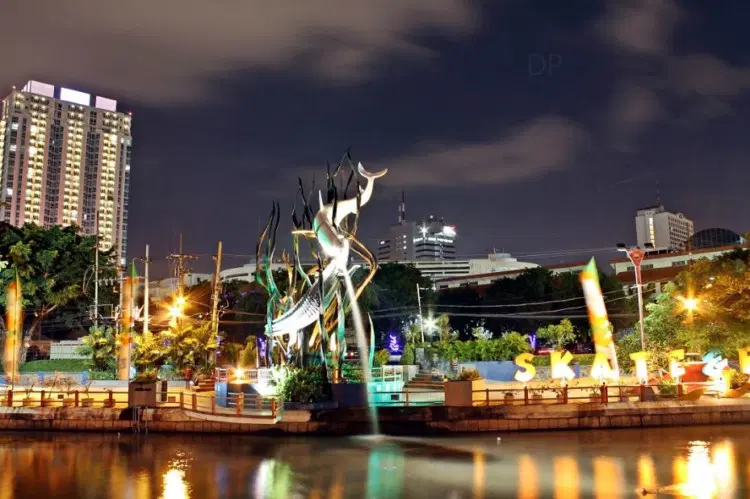
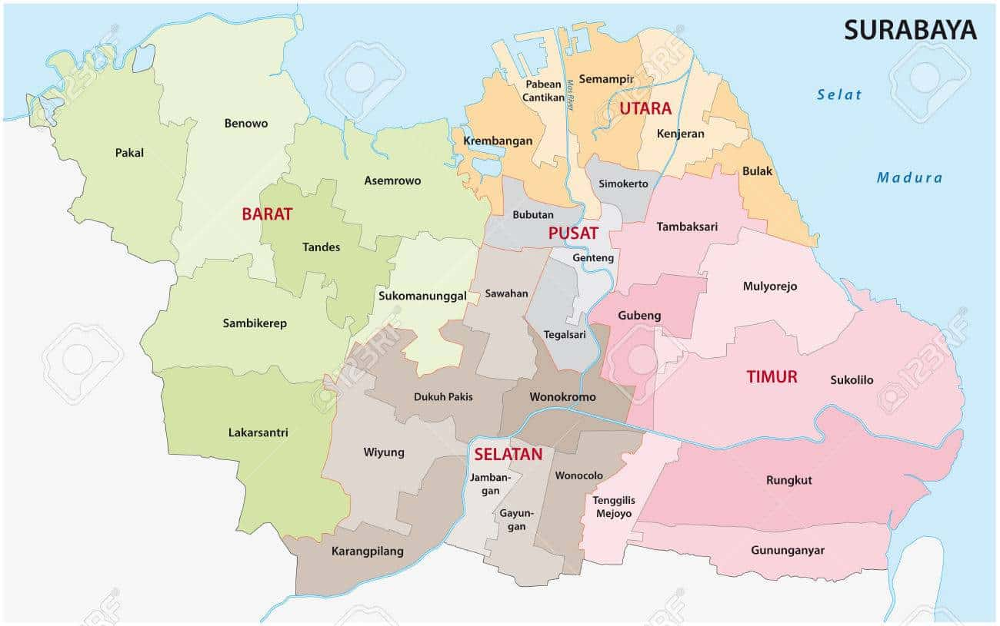
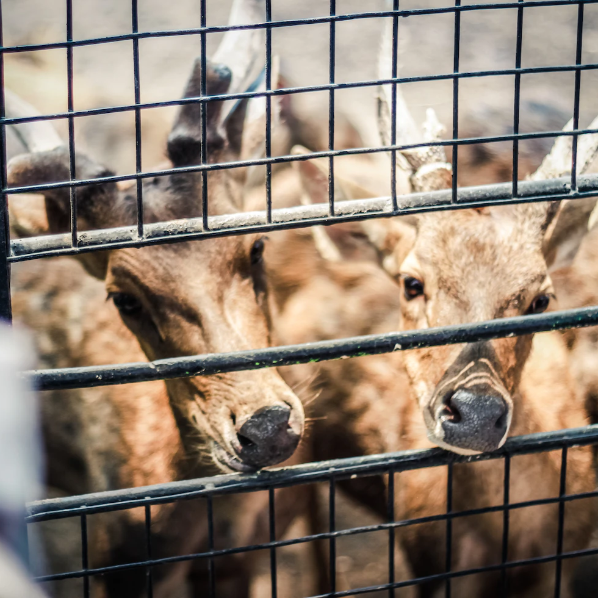
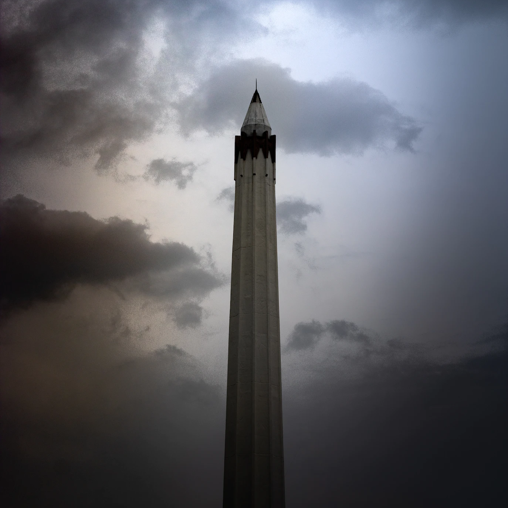

Sejarah

Sejak awal berdirinya, kota ini memiliki sejarah panjang yang terkait dengan nilai-nilai heroisme. Istilah Surabaya terdiri dari kata sura (berani) dan baya (bahaya), yang kemudian secara harfiah diartikan sebagai berani
menghadapi bahaya yang datang. Nilai kepahlawanan tersebut salah satunya mewujud dalam peristiwa pertempuran antara Raden Wijaya dan Pasukan Mongol pimpinan Kubilai Khan di tahun 1293. Begitu bersejarahnya pertempuran tersebut
hingga tanggalnya diabadikan menjadi tanggal berdirinya Kota Surabaya hingga saat ini, yaitu 31 Mei. Sejak awal berdirinya, kota ini memiliki sejarah panjang yang terkait dengan nilai-nilai heroisme. Istilah Surabaya terdiri
dari kata sura (berani) dan baya (bahaya), yang kemudian secara harfiah diartikan sebagai berani menghadapi bahaya yang datang. Nilai kepahlawanan tersebut salah satunya mewujud dalam peristiwa pertempuran antara Raden Wijaya
dan Pasukan Mongol pimpinan Kubilai Khan di tahun 1293. Begitu bersejarahnya pertempuran tersebut hingga tanggalnya diabadikan menjadi tanggal berdirinya Kota Surabaya hingga saat ini, yaitu 31 Mei. Sejarah Surabaya juga
berkaitan dengan aktivitas perdagangan. Secara geografis Surabaya memang diciptakan sebagai kota dagang dan pelabuhan. Surabaya merupakan pelabuhan gerbang utama Kerajaan Majapahit. Letaknya yang dipesisir utara Pulau Jawa
membuatnya berkembang menjadi sebuah pelabuhan penting di zaman Majapahit pada abad ke - 14. Berlanjut pada masa kolonial, letak geografisnya yang sangat strategis membuat pemerintah Kolonial Belanda pada abad ke - 19,
memposisikannya sebagai pelabuhan utama yang berperan sebagai collecting centers dari rangkaian terakhir kegiatan pengumpulan hasil produksi perkebunan di ujung Timur Pulau Jawa, yang ada di daerah pedalaman untuk diekspor ke
Eropa.
Geografis

Surabaya adalah ibu kota Provinsi Jawa Timur yang dikenal sebagai Kota Pahlawan. Surabaya terletak di daerah Pantai Utara, Provinsi Jawa Timur. Secara geografis, terletak di 7°9′- 7°21′ Lintang Selatan dan 112° 36′ – 112° 54′
Bujur Timur. Kota Surabaya berbatasan dengan Selat Madura di utara dan timur, Kabupaten Sidoarjo di selatan, dan Kabupaten Gresik di barat. Kota Surabaya memiliki luas 33.306,30 Ha. Sebagian besar wilayahnya berupa dataran
rendah, dengan ketinggian antara 3 – 6 meter di atas permukaan air laut (dataran rendah), kecuali di bagian selatan terdapat dua bukit landai di daerah Lidah & Gayungan dengan ketinggian 25 – 50 meter di atas permukaan air
laut. Di Surabaya juga terdapat muara Sungai Kalimas, salah satu dari dua pecahan Sungai Brantas. Secara administratif, Surabaya dibagi menjadi 160 kelurahan dan 31 kecamatan (yang terbagi ke dalam 5 wilayah) dengan jumlah
penduduk mencapai 2,9 juta orang pada malam hari dan mencapai 5,6 juta orang pada siang hari karena banyak orang yang datang dari kota-kota tetangga yang bekerja di Surabaya. Surabaya merupakan kota multi etnis yang kaya
budaya. Beragam etnis ada di Surabaya, seperti etnis Melayu, Cina, India, Arab, dan Eropa. Etnis Nusantara pun dapai dijumpai, seperti Madura, Sunda, Batak, Kalimantan, Bali, Sulawesi yang membaur dengan penduduk asli Surabaya
membentuk pluralisme budaya yang selanjutnya menjadi ciri khas kota Surabaya. Sebagian besar masyarakat Surabaya adalah orang Surabaya asli dan orang Madura.
Wisata

Kebun Binatang Surabaya
Kebun Binatang Surabaya (Dialek Arekan: Kebon Binatang Suroboyo, disingkat KBS) adalah salah satu kebun binatang yang populer di Indonesia dan terletak di Surabaya. KBS merupakan kebun binatang yang pernah terlengkap
se-Asia Tenggara, di dalamnya terdapat lebih dari 230 spesies satwa yang berbeda yang terdiri lebih dari 2179 ekor satwa. Termasuk di dalamnya satwa langka Indonesia maupun dunia terdiri dari Mamalia, Aves, Reptilia, dan
Pisces.

Museum Pendidikan Surabaya
Museum Pendidikan Surabaya merupakan museum tematik yang didirikan sebagai langkah pelestarian sejarah dan budaya bangsa dengan tujuan untuk mendukung kegiatan edukasi, riset dan rekreasi di Kota Surabaya. Museum ini
menyimpan bukti materiil Pendidikan pada masa Pra-Aksara, Masa Klasik, Masa Kolonial dan Masa Kemerdekaan. Menempati sebuah bangunan di Jalan Genteng Kali no. 10 yang merupakan bekas gedung Sekolah Taman Siswa.

Tugu Pahlawan Surabaya
Tugu Pahlawan adalah sebuah monumen yang menjadi markah tanah Kota Surabaya. Tinggi monumen ini adalah 41,15 meter dan berbentuk lingga atau paku terbalik. Tubuh monumen berbentuk lengkungan (canalures) sebanyak 10
lengkungan, dan terbagi atas 11 ruas. Tugu Pahlawan dibangun untuk memperingati peristiwa Pertempuran 10 November 1945 di Surabaya. Monumen ini berada di tengah-tengah kota di Jalan Pahlawan Surabaya, dan di dekat Kantor
Gubernur Jawa Timur.

Patung Budha 4 wajah Surabaya
Di ibukota Provinsi Jawa Timur, tepatnya di kawasan Pantai Ria Kenjeran Surabaya, berdiri megah patung Buddha dengan 4 wajah dan 8 tangan. Patung Buddha 4 wajah ini bisa dinikmati dari empat penjuru mata angin berbeda.
Patung Buddha 4 wajah di kawasan Pantai Ria Kenjeran dibangun pada tahun 2003. Setahun kemudian, patung ini diresmikan. Patung berlapis emas ini pun didaulat sebagai patung terbesar dan termegah di Indonesia.